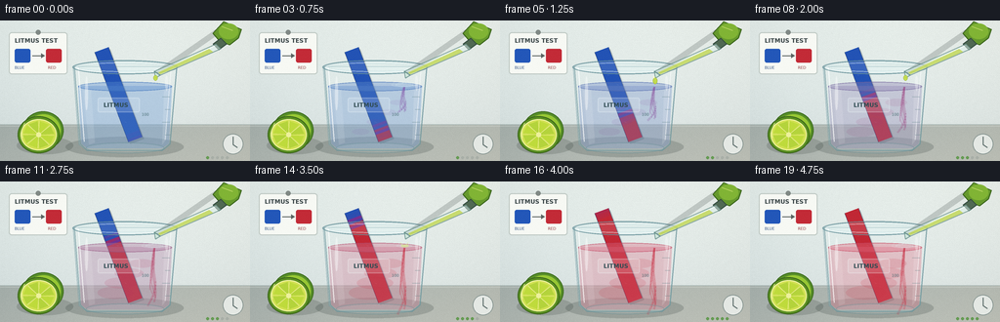
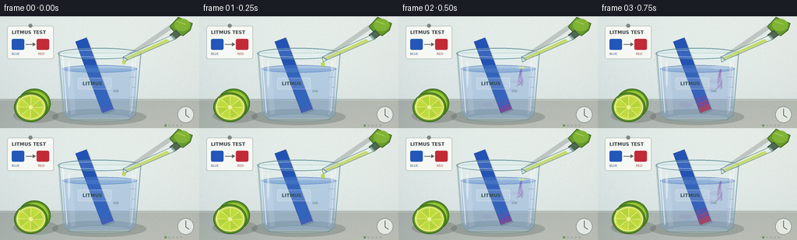

CODING AGENTS AS PIXEL WORLD MODELS
traex/GPT-5.6-Sol · material_0035
点击播放 · 原生 RGB 像素
逐轮保存的候选
回放视频、检查图与代码变化。
每份候选均可单独播放。实际图片检查记录在下方工具轨迹中。
候选 01播放与检查图
点击播放 · 原生 RGB 像素


展开代码变化
--- 上一保存版本
+++ 本次保存版本
@@ -0,0 +1,249 @@
+from pathlib import Path
+import math
+import numpy as np
+from PIL import Image, ImageDraw, ImageFont, ImageFilter
+import artifact_io
+
+W,H,N,S = 256,144,20,4
+ROOT = Path(__file__).resolve().parent
+rng = np.random.default_rng(3501)
+
+try:
+ FONT_B = ImageFont.truetype('/usr/share/fonts/truetype/dejavu/DejaVuSans-Bold.ttf', 6*S)
+ FONT_S = ImageFont.truetype('/usr/share/fonts/truetype/dejavu/DejaVuSans.ttf', 4*S)
+except Exception:
+ FONT_B = FONT_S = ImageFont.load_default()
+
+def scp(points): return [(int(x*S),int(y*S)) for x,y in points]
+def box(b): return tuple(int(v*S) for v in b)
+def mix(a,b,t): return tuple(int(round(a[i]*(1-t)+b[i]*t)) for i in range(3))
+def smoothstep(a,b,x):
+ x=max(0,min(1,(x-a)/(b-a)))
+ return x*x*(3-2*x)
+
+def ellipse(d,b,fill,outline=None,width=1): d.ellipse(box(b),fill=fill,outline=outline,width=max(1,int(width*S)))
+def line(d,pts,fill,width=1,joint='curve'): d.line(scp(pts),fill=fill,width=max(1,int(width*S)),joint=joint)
+def poly(d,pts,fill,outline=None): d.polygon(scp(pts),fill=fill); outline and d.line(scp(pts+[pts[0]]),fill=outline,width=S,joint='curve')
+
+def background():
+ h,w=H*S,W*S
+ yy,xx=np.mgrid[0:h,0:w]
+ # cool laboratory wall and warm stone worktop
+ wall=np.empty((h,w,3),dtype=np.float32)
+ wall[:,:,0]=229-15*yy/h+8*xx/w
+ wall[:,:,1]=238-13*yy/h+5*xx/w
+ wall[:,:,2]=235-10*yy/h+3*xx/w
+ bench=yy>=107*S
+ bx=(xx/(W*S)); by=(yy-107*S)/(37*S)
+ wall[:,:,0]=np.where(bench,168+18*bx+10*by,wall[:,:,0])
+ wall[:,:,1]=np.where(bench,178+13*bx+8*by,wall[:,:,1])
+ wall[:,:,2]=np.where(bench,174+9*bx+7*by,wall[:,:,2])
+ # vignette
+ vig=np.clip(((xx-w*.48)/(w*.78))**2+((yy-h*.48)/(h*.9))**2,0,1)
+ wall-=vig[:,:,None]*14
+ # fixed subtle texture, avoids flat synthetic background
+ noise=np.repeat(np.repeat(rng.normal(0,1.15,(H,W)),S,0),S,1)
+ wall+=noise[:,:,None]
+ return Image.fromarray(np.clip(wall,0,255).astype(np.uint8),'RGB')
+
+BG=background()
+
+def draw_card(im):
+ d=ImageDraw.Draw(im,'RGBA')
+ # pinned indicator card in the back, strong visual context
+ d.rounded_rectangle(box((9,12,69,55)),radius=3*S,fill=(249,250,245,238),outline=(149,164,159,145),width=S)
+ ellipse(d,(36.5,9.5,41.5,14.5),(114,123,119,220))
+ d.text((15*S,17*S),'LITMUS TEST',font=FONT_B,fill=(54,66,68,235))
+ d.rounded_rectangle(box((15,29,31,43)),radius=2*S,fill=(35,87,185,255))
+ d.rounded_rectangle(box((47,29,63,43)),radius=2*S,fill=(195,43,55,255))
+ line(d,[(33,36),(44,36)],(82,91,89,230),1.1)
+ poly(d,[(42,33.5),(46,36),(42,38.5)],(82,91,89,230))
+ d.text((15*S,46*S),'BLUE',font=FONT_S,fill=(43,77,130,230))
+ d.text((49*S,46*S),'RED',font=FONT_S,fill=(140,55,58,230))
+
+def draw_lime(im):
+ d=ImageDraw.Draw(im,'RGBA')
+ # shadow
+ ellipse(d,(17,119,75,137),(56,65,59,53))
+ # rear whole lime
+ ellipse(d,(23,93,65,132),(88,143,41,255), (62,110,30,255),1)
+ ellipse(d,(27,96,62,129),(151,199,52,255))
+ # sliced face
+ ellipse(d,(18,98,61,136),(93,146,35,255),(58,102,26,255),1.2)
+ ellipse(d,(21,101,58,133),(210,225,84,255),(244,244,166,255),1)
+ cx,cy=39.5,117
+ for k in range(8):
+ a0=2*math.pi*k/8+.06; a1=2*math.pi*(k+1)/8-.06
+ pts=[(cx,cy),(cx+16*math.cos(a0),cy+14*math.sin(a0)),(cx+16*math.cos(a1),cy+14*math.sin(a1))]
+ poly(d,pts,(177 if k%2 else 189,211 if k%2 else 218,58,235))
+ line(d,[(cx,cy),pts[1]],(241,242,166,220),.6)
+ ellipse(d,(37,114.5,42,119.5),(238,241,157,255))
+ # rind shine
+ line(d,[(25,105),(22,113),(23,120)],(237,242,155,190),1)
+
+def strip_edges(q):
+ # strip from upper left to lower right; q=0 top
+ ax,ay=104.0,30.0; bx,by=138.5,122.0
+ cx=ax+(bx-ax)*q; cy=ay+(by-ay)*q
+ length=math.hypot(bx-ax,by-ay); px=-(by-ay)/length*7.5; py=(bx-ax)/length*7.5
+ return (cx+px,cy+py),(cx-px,cy-py)
+
+def draw_strip(im, f):
+ d=ImageDraw.Draw(im,'RGBA')
+ # paper shadow to right
+ l0,r0=strip_edges(0); l1,r1=strip_edges(1)
+ poly(d,[(l0[0]+2,l0[1]+2),(r0[0]+2,r0[1]+2),(r1[0]+2,r1[1]+2),(l1[0]+2,l1[1]+2)],(25,35,45,45))
+ progress=np.clip((f-1.0)/16.0,0,1.08)
+ segs=38
+ for j in range(segs):
+ q0=j/segs; q1=(j+1)/segs; q=(q0+q1)/2
+ # reaction travels from immersed lower end up; feathered/mottled front
+ front=1.02-progress*1.12
+ texture=0.035*math.sin(j*2.7+0.4)+0.02*math.sin(j*6.1)
+ conv=smoothstep(front-.10,front+.10,q+texture)
+ # a little immediate acidity near liquid line spreads downward
+ blue=(35,83,181); violet=(119,47,144); red=(193,40,53)
+ if conv<.52: c=mix(blue,violet,conv/.52)
+ else: c=mix(violet,red,(conv-.52)/.48)
+ lA,rA=strip_edges(q0); lB,rB=strip_edges(q1)
+ poly(d,[lA,rA,rB,lB],c+(255,))
+ # paper edge and fibrous dashes
+ l0,r0=strip_edges(0); l1,r1=strip_edges(1)
+ line(d,[l0,l1],(25,46,91,180),.55); line(d,[r0,r1],(25,46,91,180),.55)
+ for j in range(5,35,5):
+ q=j/38; a,b=strip_edges(q)
+ t=.25+.4*((j//5)%2)
+ x=a[0]*(1-t)+b[0]*t; y=a[1]*(1-t)+b[1]*t
+ line(d,[(x,y),(x+2.0,y+.7)],(255,255,255,55),.45)
+
+def draw_beaker_back(im, f):
+ d=ImageDraw.Draw(im,'RGBA')
+ # tabletop contact shadow
+ ellipse(d,(67,119,188,140),(33,46,43,48))
+ # translucent rear glass body
+ poly(d,[(75,47),(181,47),(174,127),(166,133),(89,133),(81,127)],(225,243,244,42),(112,153,161,120))
+ # rear rim and far liquid surface
+ ellipse(d,(75,41,181,55),(219,242,243,48),(94,139,150,150),1.1)
+ ellipse(d,(80,44,176,52),(221,243,239,44),(148,184,189,125),.65)
+
+def draw_liquid(im,f):
+ d=ImageDraw.Draw(im,'RGBA')
+ p=smoothstep(1,18,f)
+ # liquid changes from cool blue to faint acidic rose
+ liquid=mix((87,138,206),(222,102,124),p)
+ poly(d,[(80,67),(176,67),(173,126),(166,131),(89,131),(83,126)],liquid+(82,))
+ ellipse(d,(80,62.8,176,72.3),liquid+(98,),mix((58,109,183),(194,64,88),p)+(140,),.8)
+ # glass/lime reflections in liquid
+ poly(d,[(85,72),(93,71),(97,125),(91,127)],(255,255,255,28))
+ poly(d,[(168,72),(173,71),(170,122),(166,127)],(255,255,255,34))
+ # acidic mixing plumes from impact point, curl downward and grow over time
+ if f>=2:
+ age=min(1,(f-1)/12)
+ plume=mix((117,65,165),(199,45,65),min(1,p*1.2))
+ for k in range(5):
+ phase=k*1.18
+ pts=[]
+ depth=18+age*(30+5*k)
+ for s in range(18):
+ u=s/17
+ y=68+depth*u
+ x=158 + math.sin(u*5.2+phase)*((3+k*.7)*u) - u*(2+k*.5)
+ pts.append((x,y))
+ line(d,pts,plume+(int(45+20*age),),.8+(.4*k%2))
+ # broad clouds deeper in the beaker
+ for k in range(4):
+ cx=147-10*k+5*math.sin(f*.32+k)
+ cy=84+10*k
+ rr=(4+age*(5+k*1.3))
+ ellipse(d,(cx-rr*1.6,cy-rr*.55,cx+rr*1.6,cy+rr*.55),plume+(int(15+22*age),))
+ # surface ripples after periodic drops
+ impact_phase=f%4
+ if f>=2 and impact_phase in (2,3):
+ age=impact_phase-2
+ for k in range(2):
+ rx=4+age*5+k*4
+ ellipse(d,(158-rx,66-rx*.16,158+rx,66+rx*.16),None,(226,245,246,150-k*38),.65)
+
+def draw_beaker_front(im,f):
+ d=ImageDraw.Draw(im,'RGBA')
+ # strongly readable glass edges
+ line(d,[(76,47),(82,126),(89,133),(166,133),(174,126),(181,47)],(102,144,151,160),1.05)
+ line(d,[(80,48),(86,124)],(255,255,255,190),1.15)
+ line(d,[(175,50),(169,122)],(255,255,255,155),.9)
+ ellipse(d,(88,125,168,136),(224,242,242,28),(92,135,142,128),.8)
+ # bright lip
+ ellipse(d,(74,40.5,182,55),(250,255,255,26),(99,142,150,178),1.2)
+ ellipse(d,(78,43,178,52.5),None,(240,255,255,145),.75)
+ # etched volume ticks
+ for y,longer in [(78,True),(91,False),(104,True),(117,False)]:
+ line(d,[(166 if longer else 169,y),(174,y)],(91,126,132,132),.65)
+ d.text((145*S,94*S),'100',font=FONT_S,fill=(71,107,114,110))
+ # centered frosted label plate, transparent so strip still dominant
+ d.rounded_rectangle(box((100,79,143,94)),radius=2*S,fill=(245,250,248,38),outline=(246,255,255,60),width=1*S)
+ d.text((106*S,83*S),'LITMUS',font=FONT_B,fill=(47,75,82,138))
+ # specular spots
+ ellipse(d,(87,57,90,92),(255,255,255,105))
+ ellipse(d,(169,56,172,72),(255,255,255,90))
+
+def draw_dropper(im,f):
+ d=ImageDraw.Draw(im,'RGBA')
+ # moving squeeze bulb, subtle pulse at release
+ pulse=1.0-0.06*math.exp(-((f%4)-.5)**2/.4)
+ # shadow under apparatus
+ line(d,[(223,11),(161,54)],(35,47,44,50),6)
+ # green rubber bulb
+ poly(d,[(229,1),(247,9),(244,18),(235,25),(225,21),(218,13)],(102,153,45,255),(61,103,31,255))
+ ellipse(d,(224,3,244,19),(129,180,53,255))
+ line(d,[(227,6),(238,10)],(214,231,123,150),1.2)
+ # collar and clear glass pipette angled to impact point
+ poly(d,[(226,18),(232,24),(224,30),(218,24)],(80,105,83,255),(46,72,60,220))
+ poly(d,[(221,24),(226,29),(164,56),(158,52)],(220,241,234,130),(95,134,128,185))
+ line(d,[(220,26),(163,53)],(255,255,255,185),.85)
+ # lime juice column
+ poly(d,[(214,29),(218,32),(164,55),(162,53)],(192,213,71,190))
+ # tip
+ poly(d,[(158,52),(164,56),(159.3,59)],(196,229,214,155),(92,133,129,170))
+ # animated drops; repeat three visible additions, not in every frame
+ phase=f%4
+ if f in (0,4,8,12):
+ ellipse(d,(157.0,56,161.4,61.5),(196,220,70,235),(115,146,45,210),.45)
+ elif phase==1 and f<15:
+ ellipse(d,(156.5,58.5,161,65.2),(192,217,68,240),(115,146,45,210),.45)
+ ellipse(d,(157.2,57.2,158.6,59.2),(255,255,187,170))
+ elif phase==2 and f<15:
+ # impact crown and tiny splash
+ ellipse(d,(154.5,64.5,162.5,67.4),(210,231,126,150))
+ line(d,[(156,65),(154,62.5)],(218,237,150,170),.7)
+ line(d,[(160,65),(162,62)],(218,237,150,170),.7)
+
+def make_frame(f):
+ im=BG.copy()
+ d=ImageDraw.Draw(im,'RGBA')
+ # wall seam and countertop edge
+ line(d,[(0,106.5),(256,106.5)],(104,124,120,95),.8)
+ line(d,[(0,108),(256,108)],(244,250,245,95),.7)
+ draw_card(im)
+ draw_lime(im)
+ draw_beaker_back(im,f)
+ draw_strip(im,f)
+ draw_liquid(im,f)
+ draw_beaker_front(im,f)
+ draw_dropper(im,f)
+ # corner time-lapse clock symbol (visual, not distracting)
+ d=ImageDraw.Draw(im,'RGBA')
+ ellipse(d,(228,116,249,137),(244,248,245,190),(72,94,90,160),.8)
+ line(d,[(238.5,119),(238.5,127),(243,130)],(58,78,76,210),1.1)
+ # subtle frame progression pips
+ for k in range(5):
+ fill=(83,148,62,210) if f >= k*4 else (120,133,128,65)
+ ellipse(d,(211+k*5,139,214+k*5,142),fill)
+ # downsample anti-aliased and add very slight coherent camera grain
+ im=im.resize((W,H),Image.Resampling.LANCZOS)
+ arr=np.asarray(im).astype(np.int16)
+ grain=np.random.default_rng(900+f).normal(0,.42,(H,W,1))
+ arr=np.clip(arr+grain,0,255).astype(np.uint8)
+ return arr
+
+frames=np.stack([make_frame(f) for f in range(N)],axis=0)
+assert frames.shape==(20,144,256,3) and frames.dtype==np.uint8
+artifact_io.save(frames,ROOT)
可观测工具轨迹
实际执行的命令与返回图片。
命令 1exit 0
/bin/bash -lc "cat prompt.txt && printf '\\n---RULES---\\n' && cat GENERATION_RULES.md && printf '\\n---SPEC---\\n' && cat task_spec.json"
命令 2exit 0
/bin/bash -lc "find . -maxdepth 2 -type f -printf '%p\\n' | sort && printf '\\nTOOLS\\n' && command -v ffmpeg || true && command -v python3 || true && python3 - <<'PY'
try:
import PIL; print('PIL',PIL.__version__)
except Exception as e: print('no PIL',e)
try:
import cv2; print('cv2',cv2.__version__)
except Exception as e: print('no cv2',e)
PY"命令 3exit 0
/bin/bash -lc 'cat artifact_io.py'
命令 4exit 0
/bin/bash -lc "cat > generate.py <<'PY'
from pathlib import Path
import math
import numpy as np
from PIL import Image, ImageDraw, ImageFont, ImageFilter
import artifact_io
W,H,N,S = 256,144,20,4
ROOT = Path(__file__).resolve().parent
rng = np.random.default_rng(3501)
try:
FONT_B = ImageFont.truetype('/usr/share/fonts/truetype/dejavu/DejaVuSans-Bold.ttf', 6*S)
FONT_S = ImageFont.truetype('/usr/share/fonts/truetype/dejavu/DejaVuSans.ttf', 4*S)
except Exception:
FONT_B = FONT_S = ImageFont.load_default()
def scp(points): return [(int(x*S),int(y*S)) for x,y in points]
def box(b): return tuple(int(v*S) for v in b)
def mix(a,b,t): return tuple(int(round(a[i]*(1-t)+b[i]*t)) for i in range(3))
def smoothstep(a,b,x):
x=max(0,min(1,(x-a)/(b-a)))
return x*x*(3-2*x)
def ellipse(d,b,fill,outline=None,width=1): d.ellipse(box(b),fill=fill,outline=outline,width=max(1,int(width*S)))
def line(d,pts,fill,width=1,joint='curve'): d.line(scp(pts),fill=fill,width=max(1,int(width*S)),joint=joint)
def poly(d,pts,fill,outline=None): d.polygon(scp(pts),fill=fill); outline and d.line(scp(pts+[pts[0]]),fill=outline,width=S,joint='curve')
def background():
h,w=H*S,W*S
yy,xx=np.mgrid[0:h,0:w]
# cool laboratory wall and warm stone worktop
wall=np.empty((h,w,3),dtype=np.float32)
wall[:,:,0]=229-15*yy/h+8*xx/w
wall[:,:,1]=238-13*yy/h+5*xx/w
wall[:,:,2]=235-10*yy/h+3*xx/w
bench=yy>=107*S
bx=(xx/(W*S)); by=(yy-107*S)/(37*S)
wall[:,:,0]=np.where(bench,168+18*bx+10*by,wall[:,:,0])
wall[:,:,1]=np.where(bench,178+13*bx+8*by,wall[:,:,1])
wall[:,:,2]=np.where(bench,174+9*bx+7*by,wall[:,:,2])
# vignette
vig=np.clip(((xx-w*.48)/(w*.78))**2+((yy-h*.48)/(h*.9))**2,0,1)
wall-=vig[:,:,None]*14
# fixed subtle texture, avoids flat synthetic background
noise=np.repeat(np.repeat(rng.normal(0,1.15,(H,W)),S,0),S,1)
wall+=noise[:,:,None]
return Image.fromarray(np.clip(wall,0,255).astype(np.uint8),'RGB')
BG=background()
def draw_card(im):
d=ImageDraw.Draw(im,'RGBA')
# pinned indicator card in the back, strong visual context
d.rounded_rectangle(box((9,12,69,55)),radius=3*S,fill=(249,250,245,238),outline=(149,164,159,145),width=S)
ellipse(d,(36.5,9.5,41.5,14.5),(114,123,119,220))
d.text((15*S,17*S),'LITMUS TEST',font=FONT_B,fill=(54,66,68,235))
d.rounded_rectangle(box((15,29,31,43)),radius=2*S,fill=(35,87,185,255))
d.rounded_rectangle(box((47,29,63,43)),radius=2*S,fill=(195,43,55,255))
line(d,[(33,36),(44,36)],(82,91,89,230),1.1)
poly(d,[(42,33.5),(46,36),(42,38.5)],(82,91,89,230))
d.text((15*S,46*S),'BLUE',font=FONT_S,fill=(43,77,130,230))
d.text((49*S,46*S),'RED',font=FONT_S,fill=(140,55,58,230))
def draw_lime(im):
d=ImageDraw.Draw(im,'RGBA')
# shadow
ellipse(d,(17,119,75,137),(56,65,59,53))
# rear whole lime
ellipse(d,(23,93,65,132),(88,143,41,255), (62,110,30,255),1)
ellipse(d,(27,96,62,129),(151,199,52,255))
# sliced face
ellipse(d,(18,98,61,136),(93,146,35,255),(58,102,26,255),1.2)
ellipse(d,(21,101,58,133),(210,225,84,255),(244,244,166,255),1)
cx,cy=39.5,117
for k in range(8):
a0=2*math.pi*k/8+.06; a1=2*math.pi*(k+1)/8-.06
pts=[(cx,cy),(cx+16*math.cos(a0),cy+14*math.sin(a0)),(cx+16*math.cos(a1),cy+14*math.sin(a1))]
poly(d,pts,(177 if k%2 else 189,211 if k%2 else 218,58,235))
line(d,[(cx,cy),pts[1]],(241,242,166,220),.6)
ellipse(d,(37,114.5,42,119.5),(238,241,157,255))
# rind shine
line(d,[(25,105),(22,113),(23,120)],(237,242,155,190),1)
def strip_edges(q):
# strip from upper left to lower right; q=0 top
ax,ay=104.0,30.0; bx,by=138.5,122.0
cx=ax+(bx-ax)*q; cy=ay+(by-ay)*q
length=math.hypot(bx-ax,by-ay); px=-(by-ay)/length*7.5; py=(bx-ax)/length*7.5
return (cx+px,cy+py),(cx-px,cy-py)
def draw_strip(im, f):
d=ImageDraw.Draw(im,'RGBA')
# paper shadow to right
l0,r0=strip_edges(0); l1,r1=strip_edges(1)
poly(d,[(l0[0]+2,l0[1]+2),(r0[0]+2,r0[1]+2),(r1[0]+2,r1[1]+2),(l1[0]+2,l1[1]+2)],(25,35,45,45))
progress=np.clip((f-1.0)/16.0,0,1.08)
segs=38
for j in range(segs):
q0=j/segs; q1=(j+1)/segs; q=(q0+q1)/2
# reaction travels from immersed lower end up; feathered/mottled front
front=1.02-progress*1.12
texture=0.035*math.sin(j*2.7+0.4)+0.02*math.sin(j*6.1)
conv=smoothstep(front-.10,front+.10,q+texture)
# a little immediate acidity near liquid line spreads downward
blue=(35,83,181); violet=(119,47,144); red=(193,40,53)
if conv<.52: c=mix(blue,violet,conv/.52)
else: c=mix(violet,red,(conv-.52)/.48)
lA,rA=strip_edges(q0); lB,rB=strip_edges(q1)
poly(d,[lA,rA,rB,lB],c+(255,))
# paper edge and fibrous dashes
l0,r0=strip_edges(0); l1,r1=strip_edges(1)
line(d,[l0,l1],(25,46,91,180),.55); line(d,[r0,r1],(25,46,91,180),.55)
for j in range(5,35,5):
q=j/38; a,b=strip_edges(q)
t=.25+.4*((j//5)%2)
x=a[0]*(1-t)+b[0]*t; y=a[1]*(1-t)+b[1]*t
line(d,[(x,y),(x+2.0,y+.7)],(255,255,255,55),.45)
def draw_beaker_back(im, f):
d=ImageDraw.Draw(im,'RGBA')
# tabletop contact shadow
ellipse(d,(67,119,188,140),(33,46,43,48))
# translucent rear glass body
poly(d,[(75,47),(181,47),(174,127),(166,133),(89,133),(81,127)],(225,243,244,42),(112,153,161,120))
# rear rim and far liquid surface
ellipse(d,(75,41,181,55),(219,242,243,48),(94,139,150,150),1.1)
ellipse(d,(80,44,176,52),(221,243,239,44),(148,184,189,125),.65)
def draw_liquid(im,f):
d=ImageDraw.Draw(im,'RGBA')
p=smoothstep(1,18,f)
# liquid changes from cool blue to faint acidic rose
liquid=mix((87,138,206),(222,102,124),p)
poly(d,[(80,67),(176,67),(173,126),(166,131),(89,131),(83,126)],liquid+(82,))
ellipse(d,(80,62.8,176,72.3),liquid+(98,),mix((58,109,183),(194,64,88),p)+(140,),.8)
# glass/lime reflections in liquid
poly(d,[(85,72),(93,71),(97,125),(91,127)],(255,255,255,28))
poly(d,[(168,72),(173,71),(170,122),(166,127)],(255,255,255,34))
# acidic mixing plumes from impact point, curl downward and grow over time
if f>=2:
age=min(1,(f-1)/12)
plume=mix((117,65,165),(199,45,65),min(1,p*1.2))
for k in range(5):
phase=k*1.18
pts=[]
depth=18+age*(30+5*k)
for s in range(18):
u=s/17
y=68+depth*u
x=158 + math.sin(u*5.2+phase)*((3+k*.7)*u) - u*(2+k*.5)
pts.append((x,y))
line(d,pts,plume+(int(45+20*age),),.8+(.4*k%2))
# broad clouds deeper in the beaker
for k in range(4):
cx=147-10*k+5*math.sin(f*.32+k)
cy=84+10*k
rr=(4+age*(5+k*1.3))
ellipse(d,(cx-rr*1.6,cy-rr*.55,cx+rr*1.6,cy+rr*.55),plume+(int(15+22*age),))
# surface ripples after periodic drops
impact_phase=f%4
if f>=2 and impact_phase in (2,3):
age=impact_phase-2
for k in range(2):
rx=4+age*5+k*4
ellipse(d,(158-rx,66-rx*.16,158+rx,66+rx*.16),None,(226,245,246,150-k*38),.65)
def draw_beaker_front(im,f):
d=ImageDraw.Draw(im,'RGBA')
# strongly readable glass edges
line(d,[(76,47),(82,126),(89,133),(166,133),(174,126),(181,47)],(102,144,151,160),1.05)
line(d,[(80,48),(86,124)],(255,255,255,190),1.15)
line(d,[(175,50),(169,122)],(255,255,255,155),.9)
ellipse(d,(88,125,168,136),(224,242,242,28),(92,135,142,128),.8)
# bright lip
ellipse(d,(74,40.5,182,55),(250,255,255,26),(99,142,150,178),1.2)
ellipse(d,(78,43,178,52.5),None,(240,255,255,145),.75)
# etched volume ticks
for y,longer in [(78,True),(91,False),(104,True),(117,False)]:
line(d,[(166 if longer else 169,y),(174,y)],(91,126,132,132),.65)
d.text((145*S,94*S),'100',font=FONT_S,fill=(71,107,114,110))
# centered frosted label plate, transparent so strip still dominant
d.rounded_rectangle(box((100,79,143,94)),radius=2*S,fill=(245,250,248,38),outline=(246,255,255,60),width=1*S)
d.text((106*S,83*S),'LITMUS',font=FONT_B,fill=(47,75,82,138))
# specular spots
ellipse(d,(87,57,90,92),(255,255,255,105))
ellipse(d,(169,56,172,72),(255,255,255,90))
def draw_dropper(im,f):
d=ImageDraw.Draw(im,'RGBA')
# moving squeeze bulb, subtle pulse at release
pulse=1.0-0.06*math.exp(-((f%4)-.5)**2/.4)
# shadow under apparatus
line(d,[(223,11),(161,54)],(35,47,44,50),6)
# green rubber bulb
poly(d,[(229,1),(247,9),(244,18),(235,25),(225,21),(218,13)],(102,153,45,255),(61,103,31,255))
ellipse(d,(224,3,244,19),(129,180,53,255))
line(d,[(227,6),(238,10)],(214,231,123,150),1.2)
# collar and clear glass pipette angled to impact point
poly(d,[(226,18),(232,24),(224,30),(218,24)],(80,105,83,255),(46,72,60,220))
poly(d,[(221,24),(226,29),(164,56),(158,52)],(220,241,234,130),(95,134,128,185))
line(d,[(220,26),(163,53)],(255,255,255,185),.85)
# lime juice column
poly(d,[(214,29),(218,32),(164,55),(162,53)],(192,213,71,190))
# tip
poly(d,[(158,52),(164,56),(159.3,59)],(196,229,214,155),(92,133,129,170))
# animated drops; repeat three visible additions, not in every frame
phase=f%4
if f in (0,4,8,12):
ellipse(d,(157.0,56,161.4,61.5),(196,220,70,235),(115,146,45,210),.45)
elif phase==1 and f<15:
ellipse(d,(156.5,58.5,161,65.2),(192,217,68,240),(115,146,45,210),.45)
ellipse(d,(157.2,57.2,158.6,59.2),(255,255,187,170))
elif phase==2 and f<15:
# impact crown and tiny splash
ellipse(d,(154.5,64.5,162.5,67.4),(210,231,126,150))
line(d,[(156,65),(154,62.5)],(218,237,150,170),.7)
line(d,[(160,65),(162,62)],(218,237,150,170),.7)
def make_frame(f):
im=BG.copy()
d=ImageDraw.Draw(im,'RGBA')
# wall seam and countertop edge
line(d,[(0,106.5),(256,106.5)],(104,124,120,95),.8)
line(d,[(0,108),(256,108)],(244,250,245,95),.7)
draw_card(im)
draw_lime(im)
draw_beaker_back(im,f)
draw_strip(im,f)
draw_liquid(im,f)
draw_beaker_front(im,f)
draw_dropper(im,f)
# corner time-lapse clock symbol (visual, not distracting)
d=ImageDraw.Draw(im,'RGBA')
ellipse(d,(228,116,249,137),(244,248,245,190),(72,94,90,160),.8)
line(d,[(238.5,119),(238.5,127),(243,130)],(58,78,76,210),1.1)
# subtle frame progression pips
for k in range(5):
fill=(83,148,62,210) if f >= k*4 else (120,133,128,65)
ellipse(d,(211+k*5,139,214+k*5,142),fill)
# downsample anti-aliased and add very slight coherent camera grain
im=im.resize((W,H),Image.Resampling.LANCZOS)
arr=np.asarray(im).astype(np.int16)
grain=np.random.default_rng(900+f).normal(0,.42,(H,W,1))
arr=np.clip(arr+grain,0,255).astype(np.uint8)
return arr
frames=np.stack([make_frame(f) for f in range(N)],axis=0)
assert frames.shape==(20,144,256,3) and frames.dtype==np.uint8
artifact_io.save(frames,ROOT)
PY
python3 generate.py
ls -l pixels.npz index.html inspection.png frames/00.png frames/19.png"命令 5exit 0
/bin/bash -lc "python3 - <<'PY'
import numpy as np
from PIL import Image
from pathlib import Path
z=np.load('pixels.npz')['pixels']
print('pixels tensor:',z.shape,z.dtype)
fs=sorted(Path('frames').glob('*.png'))
print('frame count:',len(fs))
for i in [0,5,10,15,19]:
a=np.array(Image.open(fs[i]).convert('RGB'))
# angled strip bounding region
m=a[28:123,96:148]
blue=((m[:,:,2]>m[:,:,0]*1.25)&(m[:,:,2]>m[:,:,1]*1.15)).sum()
red=((m[:,:,0]>m[:,:,2]*1.35)&(m[:,:,0]>m[:,:,1]*1.25)).sum()
print(i,a.shape,a.dtype,'blue-ish',blue,'red-ish',red,'mean',a.mean(axis=(0,1)).round(1))
PY"保存候选 1 份；完成命令 5 次；可验证图片返回 0 张。原始 API 响应与完整日志保留在本地。